밤길이 어두워요
골목길이 어두우면 발밑이 잘 보이지 않고 무섭습니다.
마이크로비트가 보낸 센서값을 웹앱이 읽고 판단해요. 웹앱이 돌려보낸 명령으로 서보모터와 네오픽셀이 움직여요.
마이크로비트는 0.2초마다 센서값 여덟 개를 쉼표로 이어 보내요. 웹앱은 그 줄을 읽고, 상태가 바뀔 때만 짧은 명령을 돌려보내요.
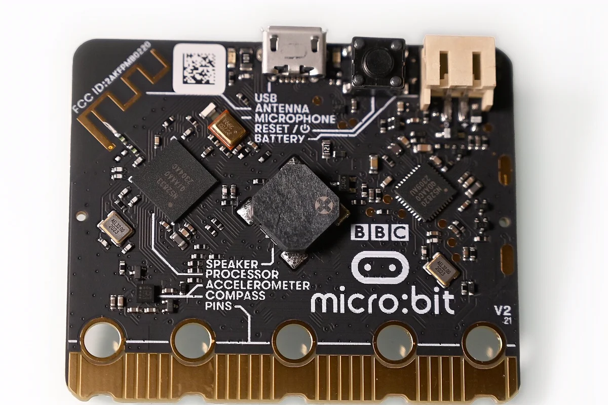
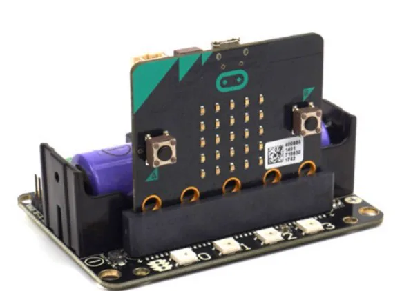
막대를 왼쪽으로 옮기면 어두워져요. 50보다 어두우면 켜지고, 80보다 밝아지면 꺼져요.
D,32,6,200,24,0,0,2,-1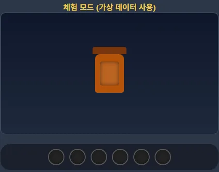

먼저 선생님이 만든 작품 「안전한 밤길 등불」을 살펴봅니다. 장치와 웹앱이 어떻게 서로 반응하는지 직접 눌러 보세요.
가방에 다는 등불입니다. 주변이 어두워지면 스스로 덮개를 열고 빛을 냅니다.
골목길이 어두우면 발밑이 잘 보이지 않고 무섭습니다.
빛 센서로 어두워진 것을 알아채고 자동으로 불을 켭니다.
서보모터가 덮개를 열고, 네오픽셀 6개가 무지개색으로 빛납니다.
센서값 8가지가 실시간으로 보이고, 화면 속 등불도 함께 움직입니다.
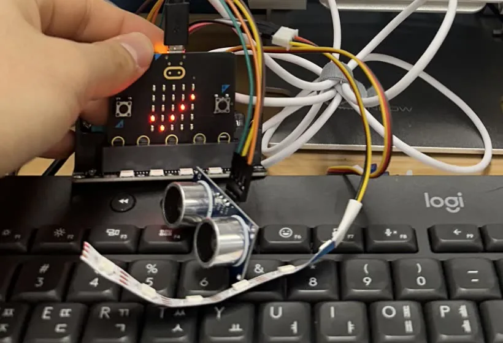
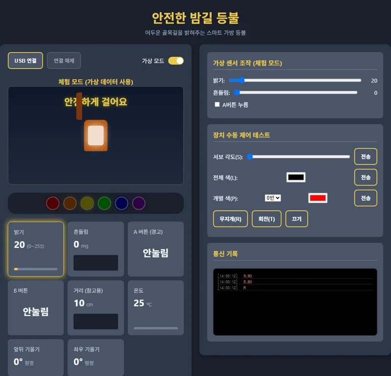
실제 웹앱을 캡처한 화면입니다. 상황을 눌러서 어떤 조건에서 어떤 명령이 나가는지 확인하세요.
장치가 없어도 괜찮아요. 슬라이더와 버튼으로 센서값을 바꾸면, 웹앱이 판단해서 명령을 보냅니다.
50보다 어두워지면 켜지고, 80보다 밝아지면 꺼집니다.
어두울 때 500보다 많이 흔들리면 빛이 빙글빙글 돕니다.
데이터가 한 바퀴 도는 길입니다. 칸을 하나씩 눌러 보세요.
센서값 8개를 쉼표로 이어서 한 줄로 보냅니다.
D,거리,흔들림,밝기,온도,A,B,앞뒤,좌우 D,12,30,24,25,0,0,3,-2
판단 결과에 따라 짧은 명령을 보냅니다.
S,90 서보모터 90도 L,255,0,0 네오픽셀 전체 빨강 R 무지개색 T 한 칸 돌리기
부품을 연결하고, 공통 코드를 넣고, 웹앱과 이어 봅니다. 순서대로 따라 하세요. 마지막 연결 시험에서 숫자가 움직이면 성공입니다.
전원을 끈 상태에서 연결하세요. 핀 이름은 색보다 글자를 보고 확인합니다.
배선 연습 페이지 열기실물 사진 위에서 초음파센서·서보모터·네오픽셀 선 10개를 먼저 연결해 봅니다.| 부품 | 연결 위치 | 주의 |
|---|---|---|
| 서보모터 | S1 | 마이크로비트의 P1이 아닙니다. |
| 네오픽셀 6개 | P15 | Robotbit에 붙은 LED(P16)와 다릅니다. |
| 초음파센서 | Trig P14, Echo P13 | Trig와 Echo를 바꾸면 거리가 -1로 나옵니다. |
| 배터리 | Robotbit 스위치 | 서보를 쓰려면 꼭 켜세요. |
| USB 선 | 마이크로비트 → 노트북 | 충전 전용 선은 안 됩니다. Surface는 USB-C 젠더 필요. |
모든 친구의 마이크로비트에 똑같은 코드를 넣습니다. 이 코드는 센서값을 보내고, 받은 명령대로 움직이기만 합니다.
makecode.microbit.org에 들어가서 새 프로젝트를 누르고 이름을 정합니다.
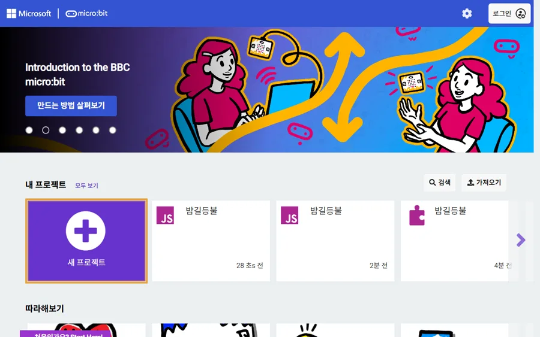
블록 목록 아래쪽의 확장을 누릅니다.
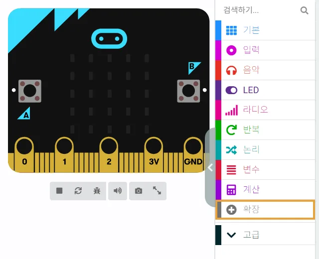
검색 칸에 robotbit를 쓰고 KittenBot의 robotbit를 누릅니다. Neopixel 블록도 함께 들어옵니다.
neopixel을 따로 추가하지 마세요. “호환되지 않습니다” 창이 뜹니다.
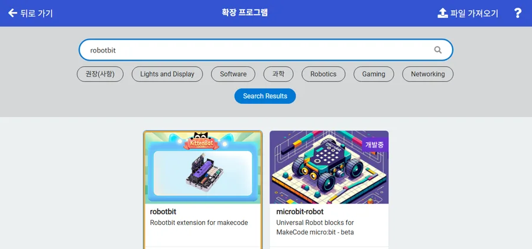
위쪽 가운데의 JavaScript를 누릅니다.
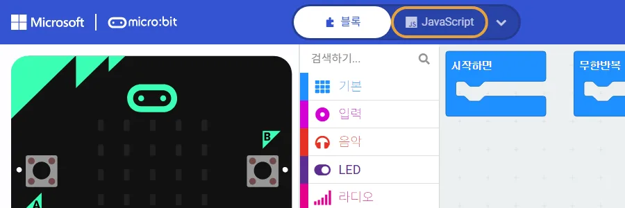
편집 칸을 누르고 Ctrl+A로 모두 고른 뒤, 아래 버튼으로 복사한 코드를 붙여넣습니다. 아래쪽 문제가 0개인지 확인하세요.
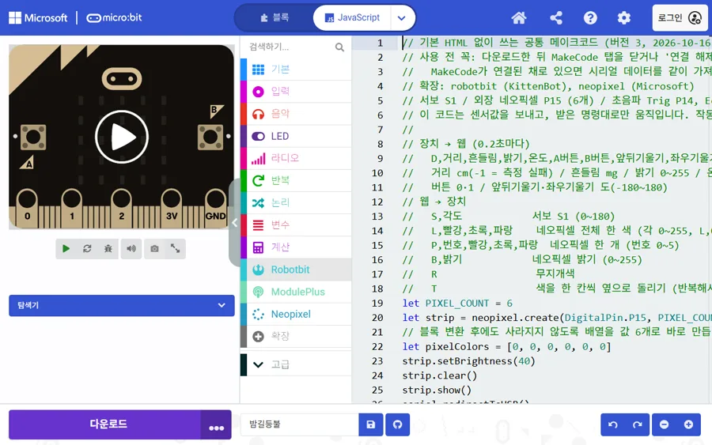
다운로드를 눌러 마이크로비트에 넣습니다. 마이크로비트 LED에 체크 표시가 나오면 준비 완료입니다.
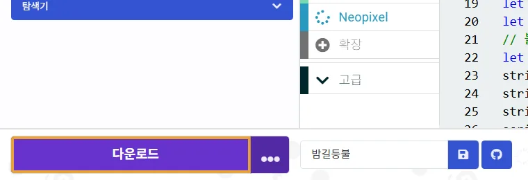
다운로드가 끝나면 메이크코드 탭을 닫으세요. 이 단계를 빼먹으면 숫자가 깨집니다.
마이크로비트가 보낸 글자를 메이크코드 탭도 함께 읽어 갑니다. 그러면 웹앱에는 쉼표나 숫자가 빠진 줄이 도착합니다.
숫자가 짧아져도 개수는 맞을 수 있어서(예: 444 → 44) 웹앱이 틀린 값으로 판단할 수 있습니다.
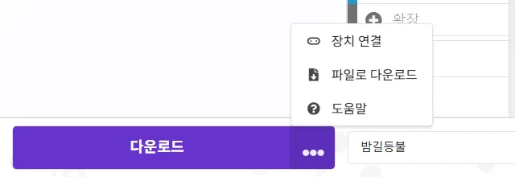
이 페이지에서 바로 시험합니다. USB 연결을 누르고, 뜨는 창에서 마이크로비트 포트(USB 직렬 장치, COM 번호)를 고른 뒤 연결을 누르세요.
0줄 받음 · 깨진 줄 0개 (0%)
연결하면 1초에 약 5줄씩 들어옵니다.
| 이런 일이 생기면 | 이렇게 해 보세요 |
|---|---|
| 숫자의 쉼표나 글자가 빠진다 | 메이크코드 탭을 닫으세요. 그다음 Robotbit 배터리를 확인하세요. |
| 포트 목록에 아무것도 없다 | 데이터용 USB 선인지, 젠더가 잘 꽂혔는지 확인하세요. |
| “포트가 이미 사용 중” 오류 | 메이크코드 탭, 다른 웹앱 탭을 모두 닫고 USB를 다시 꽂으세요. |
| 연결은 됐는데 숫자가 안 들어온다 | 공통 코드를 다시 다운로드하세요. LED에 체크 표시가 나와야 합니다. |
| 거리가 계속 -1이다 | Trig(P14)와 Echo(P13)를 바꿔 꽂았는지, 앞에 물체가 있는지 확인하세요. |
| 서보가 안 돈다 | Robotbit 전원 스위치를 켜고, 서보가 S1에 꽂혔는지 확인하세요. |
| LED에 우는 얼굴과 숫자가 나온다 | 숫자를 적어서 선생님께 보여주세요. 공통 코드를 다시 넣으면 대부분 해결됩니다. |